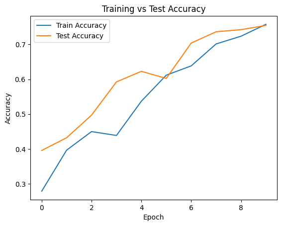
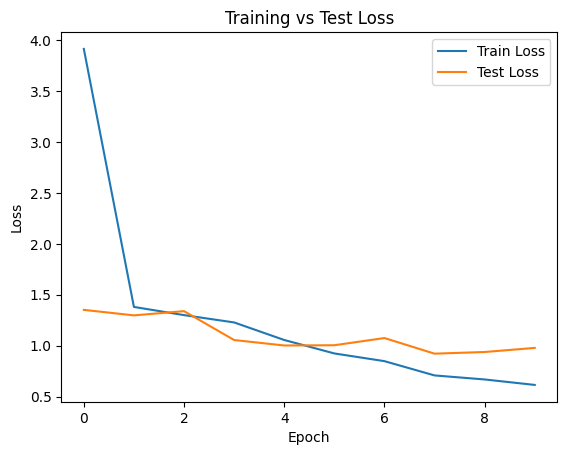
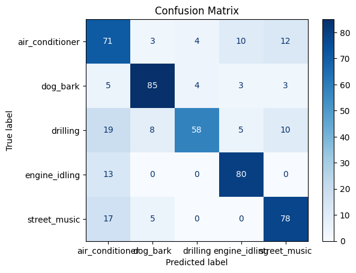
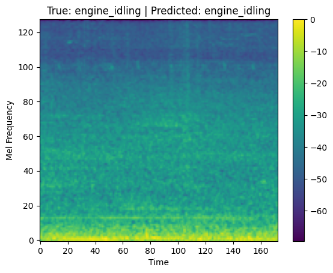

!pip install -q soundata━━━━━━━━━━━━━━━━━━━━━━━━━━━━━━━━━━━━━━━━ 51.3/51.3 kB 1.6 MB/s eta 0:00:00
etadata (setup.py) ... ━━━━━━━━━━━━━━━━━━━━━━━━━━━━━━━━━━━━━━━━ 162.0/162.0 kB 5.3 MB/s eta 0:00:00
━━━━━━━━━━━━━━━━━━━━━━━━━━━━━━━━━━━━━━━━ 69.7/69.7 kB 3.8 MB/s eta 0:00:00
━━━━━━━━━━━━━━━━━━━━━━━━━━━━━━━━━━━━━━━━ 2.9/2.9 MB 40.9 MB/s eta 0:00:0000:0100:01
━━━━━━━━━━━━━━━━━━━━━━━━━━━━━━━━━━━━━━━━ 96.4/96.4 kB 5.7 MB/s eta 0:00:00
━━━━━━━━━━━━━━━━━━━━━━━━━━━━━━━━━━━━━━━━ 102.8/102.8 kB 5.9 MB/s eta 0:00:00
━━━━━━━━━━━━━━━━━━━━━━━━━━━━━━━━━━━━━━━━ 50.7/50.7 kB 2.8 MB/s eta 0:00:00
━━━━━━━━━━━━━━━━━━━━━━━━━━━━━━━━━━━━━━━━ 141.3/141.3 kB 8.5 MB/s eta 0:00:00
━━━━━━━━━━━━━━━━━━━━━━━━━━━━━━━━━━━━━━━━ 412.9/412.9 kB 20.4 MB/s eta 0:00:00
s (setup.py) ... In this notebook, I will build a neural network model that can recognize different sounds from the UrbanSound8K dataset. This is useful in many real-life situations like smart cities, noise monitoring, or safety systems.
import soundata
import random
import matplotlib.pyplot as plt
import numpy as np
import pandas as pd
import librosa
import librosa.display
import soundata
from tqdm import tqdm
from sklearn.preprocessing import LabelEncoder
from sklearn.metrics import confusion_matrix, ConfusionMatrixDisplay
from tensorflow.keras.models import Sequential
from tensorflow.keras import Input
from tensorflow.keras.layers import Conv2D, MaxPooling2D, Flatten, Dense, Dropout2025-06-10 20:31:18.705167: E external/local_xla/xla/stream_executor/cuda/cuda_fft.cc:477] Unable to register cuFFT factory: Attempting to register factory for plugin cuFFT when one has already been registered
WARNING: All log messages before absl::InitializeLog() is called are written to STDERR
E0000 00:00:1749587478.970585 35 cuda_dnn.cc:8310] Unable to register cuDNN factory: Attempting to register factory for plugin cuDNN when one has already been registered
E0000 00:00:1749587479.044610 35 cuda_blas.cc:1418] Unable to register cuBLAS factory: Attempting to register factory for plugin cuBLAS when one has already been registered
dataset = soundata.initialize('urbansound8k')
dataset.download()
dataset.validate()5.61GB [04:17, 23.4MB/s]
1.15MB [00:01, 1.08MB/s]
100%|██████████| 1/1 [00:00<00:00, 488.90it/s]
100%|██████████| 8732/8732 [00:20<00:00, 431.84it/s]
({'metadata': {}, 'clips': {}}, {'metadata': {}, 'clips': {}})We will only use 5 sound types to make our model simple and fast. These are: dog_bark, engine_idling, street_music, ari_conditioner, and drilling.
clipIds = dataset.clip_ids
rows = []
for clipId in clipIds:
clip = dataset.clip(clipId)
classLabel = clip.tags.labels[0] if clip.tags.labels else None
rows.append({
'clip_id': clipId,
'file_path': clip.audio_path,
'fold': clip.fold,
'class': classLabel
})
meta = pd.DataFrame(rows)
print("Unique class labels found:", sorted(meta['class'].unique()))
chosenClasses = ['dog_bark', 'engine_idling', 'drilling', 'street_music', 'air_conditioner']
meta = meta[meta['class'].isin(chosenClasses)].reset_index(drop=True)Unique class labels found: ['air_conditioner', 'car_horn', 'children_playing', 'dog_bark', 'drilling', 'engine_idling', 'gun_shot', 'jackhammer', 'siren', 'street_music']
We turn audio files into 2D images (mel spectrograms) so that CNN can work with them. Each audio file is max 6 seconds.
def extractMel(filePath, sr=22050, nMels=128, duration=6):
y, sr = librosa.load(filePath, sr=sr, duration=duration)
mel = librosa.feature.melspectrogram(y=y, sr=sr, n_mels=nMels)
melDb = librosa.power_to_db(mel, ref=np.max)
return melDbWe will create two lists: X for spectrogram images and y for class labels. We will use fold 10 for testing, and the rest for training.
trainFolds = list(range(1, 10))
testFold = 10
trainFiles = meta[meta['fold'].isin(trainFolds)]
testFiles = meta[meta['fold'] == testFold]
def buildDataset(fileList):
X = []
y = []
for _, row in tqdm(fileList.iterrows(), total=len(fileList)):
filePath = row['file_path']
try:
mel = extractMel(filePath)
if mel.shape[1] < 173:
padWidth = 173 - mel.shape[1]
mel = np.pad(mel, ((0, 0), (0, padWidth)))
else:
mel = mel[:, :173]
mel = mel.astype(np.float32)
X.append(mel)
y.append(row['class'])
except Exception as e:
print("Skipped:", filePath, "Error:", e)
X = np.array(X)
y = np.array(y)
return X, y
XTrain, yTrain = buildDataset(trainFiles)
XTest, yTest = buildDataset(testFiles)
print(XTrain.shape)100%|██████████| 4507/4507 [01:48<00:00, 41.70it/s]
100%|██████████| 493/493 [00:09<00:00, 54.33it/s](4507, 128, 173)
We reshape the data to fit CNN input and change labels into numbers.
XTrain = XTrain.squeeze()
XTest = XTest.squeeze()
if XTrain.ndim == 3:
XTrain = XTrain[..., np.newaxis]
if XTest.ndim == 3:
XTest = XTest[..., np.newaxis]
labelEncoder = LabelEncoder()
yTrainEncoded = labelEncoder.fit_transform(yTrain)
yTestEncoded = labelEncoder.transform(yTest)We use two convolution layers with max pooling, flatten the data, and then use dense layers to predict.
inputShape = XTrain.shape[1:]
model = Sequential([
Input(shape=inputShape),
Conv2D(16, (3,3), activation='relu'),
MaxPooling2D((2,2)),
Conv2D(32, (3,3), activation='relu'),
MaxPooling2D((2,2)),
Flatten(),
Dense(64, activation='relu'),
Dropout(0.3),
Dense(len(chosenClasses), activation='softmax')
])2025-06-10 20:39:45.714623: E external/local_xla/xla/stream_executor/cuda/cuda_driver.cc:152] failed call to cuInit: INTERNAL: CUDA error: Failed call to cuInit: UNKNOWN ERROR (303)
We train the model for 10 epochs.
model.compile(optimizer='adam', loss='sparse_categorical_crossentropy', metrics=['accuracy'])
history = model.fit(XTrain, yTrainEncoded, epochs=10, batch_size=32, validation_data=(XTest, yTestEncoded))Epoch 1/10
141/141 ━━━━━━━━━━━━━━━━━━━━ 39s 257ms/step - accuracy: 0.2328 - loss: 10.7417 - val_accuracy: 0.3955 - val_loss: 1.3519
Epoch 2/10
141/141 ━━━━━━━━━━━━━━━━━━━━ 37s 262ms/step - accuracy: 0.3879 - loss: 1.3923 - val_accuracy: 0.4320 - val_loss: 1.2979
Epoch 3/10
141/141 ━━━━━━━━━━━━━━━━━━━━ 36s 252ms/step - accuracy: 0.4407 - loss: 1.3040 - val_accuracy: 0.4970 - val_loss: 1.3396
Epoch 4/10
141/141 ━━━━━━━━━━━━━━━━━━━━ 35s 251ms/step - accuracy: 0.4247 - loss: 1.2811 - val_accuracy: 0.5923 - val_loss: 1.0560
Epoch 5/10
141/141 ━━━━━━━━━━━━━━━━━━━━ 36s 258ms/step - accuracy: 0.4998 - loss: 1.0846 - val_accuracy: 0.6227 - val_loss: 1.0025
Epoch 6/10
141/141 ━━━━━━━━━━━━━━━━━━━━ 35s 250ms/step - accuracy: 0.6222 - loss: 0.9160 - val_accuracy: 0.6024 - val_loss: 1.0049
Epoch 7/10
141/141 ━━━━━━━━━━━━━━━━━━━━ 47s 330ms/step - accuracy: 0.6222 - loss: 0.8645 - val_accuracy: 0.7039 - val_loss: 1.0755
Epoch 8/10
141/141 ━━━━━━━━━━━━━━━━━━━━ 36s 255ms/step - accuracy: 0.6978 - loss: 0.7023 - val_accuracy: 0.7363 - val_loss: 0.9223
Epoch 9/10
141/141 ━━━━━━━━━━━━━━━━━━━━ 36s 254ms/step - accuracy: 0.7298 - loss: 0.6677 - val_accuracy: 0.7424 - val_loss: 0.9385
Epoch 10/10
141/141 ━━━━━━━━━━━━━━━━━━━━ 41s 256ms/step - accuracy: 0.7448 - loss: 0.6221 - val_accuracy: 0.7546 - val_loss: 0.9787
We can see how well the model is learning by looking at accuracy and loss graphs.
plt.plot(history.history['accuracy'], label='Train Accuracy')
plt.plot(history.history['val_accuracy'], label='Test Accuracy')
plt.xlabel('Epoch')
plt.ylabel('Accuracy')
plt.legend()
plt.title('Training vs Test Accuracy')
plt.show()
plt.plot(history.history['loss'], label='Train Loss')
plt.plot(history.history['val_loss'], label='Test Loss')
plt.xlabel('Epoch')
plt.ylabel('Loss')
plt.legend()
plt.title('Training vs Test Loss')
plt.show()

This matrix shows how often the model guesses correctly or makes mistakes between classes.
yPred = model.predict(XTest)
yPredLabels = np.argmax(yPred, axis=1)
cm = confusion_matrix(yTestEncoded, yPredLabels)
disp = ConfusionMatrixDisplay(confusion_matrix=cm, display_labels=labelEncoder.classes_)
disp.plot(cmap='Blues')
plt.title('Confusion Matrix')
plt.show()16/16 ━━━━━━━━━━━━━━━━━━━━ 1s 72ms/step

We will pick one example from test data and see what the model thinks.
index = random.randint(0, len(XTest)-1)
sample = XTest[index]
trueLabel = yTest[index]
prediction = labelEncoder.inverse_transform([np.argmax(model.predict(sample[np.newaxis, ...]))])[0]
plt.imshow(sample.squeeze(), aspect='auto', origin='lower')
plt.title(f"True: {trueLabel} | Predicted: {prediction}")
plt.xlabel("Time")
plt.ylabel("Mel Frequency")
plt.colorbar()
plt.show()1/1 ━━━━━━━━━━━━━━━━━━━━ 0s 41ms/step

We built a simple CNN model to classify 5 types of urban sounds from the UrbanSound8K dataset. We used mel spectrograms as input features and trained the model using only fold 1–9 as training and fold 10 as test. The model showed good accuracy and learned to tell the difference between sounds.
In future work, we can: